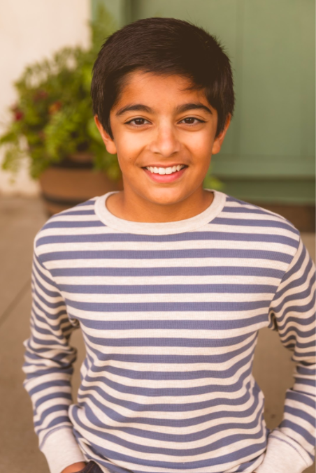

About Me

My name is Rohan Nihalani, I attend Dublin High School, in Dublin, CA, and I want to earn a bachelor's degree in a computer science field. Computer’s have always fascinated me, I have always been so impressed by how much you can create with computers. My interest in computer science first started when I was still in elementary school. I remember back when I was 3rd or 4th grade, I saw this video about AI Learning. I was truly fascinated by this and thought it was very interesting. This, along with some of my other expereinces with computers, helped jump start my interest in computer science. It helped my set my goals at a young age. I plan on reaching my goals through determination and hard work. I hope to go to a great university for computer science. To get this, I plan on taking many extracurricular activities, as well as follow DEDA’s computer science path. This involves taking many computer science classes, joining a mentorship program, and going on computer science related field trips.
I have already joined a club that will help me reach my goal, Gael Force Robotics. To expand on joining Gael Force Robotics, not only does this help me gain information about engineering and computer science, but also help me talk to older students in the club, who have lots of experience they can pass down. Also, I was one of the only freshmen to make it onto a competitive robotics team. I made it into team 5327V, and even though it was hard to have meetings, I still was able to gain experience and knowledge about not only actually building robots, but also documentation, and coding. My competitive team 5327V, also qualified for the VEX Robotics World Championship. I made it onto the competitive team through my passion for building and coding robots, when I found out about GFR(Gael Force Robotics), I submitted a design to the club in hopes of getting picked for a team. Though my design was never used, it still told the team captains that I had an interest in robotics, which helped me get onto a competitive robotics team.
As a person, I believe that our experiences influence us a lot, they shape who we are. My experiences have helped me build skills, strengths, and abilities that have helped me in my life. One example of this can be seen in joining GFR. Joining GFR helped me gain many skills, one of them being documentation. Learning about documentation has helped me vastly improve my writing and documentation skills. In GFR, I was tasked with a major role in documenting. This helped me improve my documentation for some of my projects I have done during my Computer Science Essentials course. Other skills that I have acquired that have helped me are, organization, leadership, and communication. I have used my leadership skills to help take lead in a project and ensure that we receive a good grade. My experiences have taught me that I am resilient and determined. I am determined to be my best self and always give 100%.
That is all about me. I am a determined person, who never gives up. I will give 100% every time to reach my dreams and goals. Thank you for taking the time to read this, and I hope you enjoy the rest of my site!